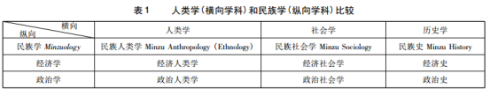

收录于合集

简 介
**
**
【作者】 张小军，教授，清华大学社会学系，北京， 100084
【 来源 】 《世界民族》2018年第 5期
内 容 提 要
本文从历史、文化和学科三个视角，论述了人类学与民族学的关联与并接。历史并接论述了两者在近代的各自引入和本土化过程。近代中国的国家危机和国家建立的需要导致了两种并置的思潮：民族主义和主权国家，从而引出了“民族”概念的重要性和民族学的本土化。文化并接一方面体现在学科学理上，“文化”作为两个学科共同的研究主旨；另一方面体现在两学科如何进行“人类命运共同体”和“中华民族共同体”的研究。学科并接讨论了两学科的相同说、相佐说和并立说，并从人类学的横向学科与民族学的纵向学科属性思考两者在学科体系中的位置。
关 键 词
**人类学 民族学 文化 民族主义 Minzuology **
**近代以来西学东渐，人类学 (Anthropology) 和民族学(Ethnology)伴随着民族国家的进程进入中国学界，两学科在不同年代本土化的过程中遭遇了不同的处境，形成了各自的学科演变及其两者之间关系的某些纠结和争辩。**时至今日，这些学科演变中的历史纠结已经影响到各自的学科发展，本来在欧美学界已经合而为一的两个学科，在中国大陆学界依然迷茫于各自的未来走向。2017年，中央民族大学民族学与社会学学院组织了关于两个学科发展的学术研讨，本文即是在会议发言基础上补充修订完成的。从历史、文化和学科并接三个视角，本文探讨了历史上两者在近代民族主义和主权国家思潮下的本土化过程；讨论了“文化”作为两个学科共同的研究主旨；并从学科体系和学科属性思考了两者在学科体系中的位置。 在归纳和充分理解诸多学者观点的基础上，本文认为应该以世界的人类学和中国的民族学来表达两者的学科归属，并期待中国的民族学能够真正走出自己的学科之路。
** 一、 历史的并接**
晚清至民国，中国社会进入了一个巨大的转折。两种国家形态和政体的转变，迫切需要关于解决国家建立和转型的新知识。 在这个过程中，一些西方学科进入中国学界，人类学与民族学也应运而生，并形成了历史上两个学科的不同发展过程，包括了两者概念的各自引入和本土化过程、相互的融合与借鉴以及各自的后来发展。近代国家转型引起的国家危机，导致了“民族”概念在近代学术史上的重要位置。简单说，自晚清以来，国家的危机与新的主权国家如何建的需要并置。在这种情况下，也出现了两种并置的思潮， 一是 民族主义的民族国家思潮，二是主权国家思潮。杜赞奇( P·Duara) 曾经指出: 民族主义在19世纪形成了世界性的民族国家体系，这一世界性的体系一方面将民族国家看作唯一合法的政体形式， 另一方面 这一国家形式在其领土内强调自己拥有主权。①由此，民族国家和主权国家成为两种普遍思潮，前者解决的是帝国崩溃之后建立什么样的新国家；后者解决的是新国家如何建立的问题。 在学术上，前者促使 “民族学”( ethnology) 进入中国; 后者直接促进了“民族学”的本土化(特别是边疆少数民族的研究) ，即中国民族学之形成。
(一) 民族研究 : 从民族国家到多民族共和
在孙中山的三民主义中，“民族”之所以成为第一个主义，乃因为此一“民族”概念联系到国家的建立，有了国家，才能谈民权与民生。 **因此，这里的 “民族”成为国家建立过程中的核心概念，它包含了两重含义: 一是中华民族之民族( nation) ，二是汉、蒙、藏、满、回等文化族群意义上的民族。**这一“民族”逻辑，包括了“国族”和少数民族自治等概念，其影响一直延续到今天。
在上述历史背景中，民族研究成为知识界重要的研究领域之一。 **近代的民族研究伴随着一个从 “民族国家”到“多民族共和国”的过程，也是试图用民族主义解决国家危机的过程。**①在这个过程中，一直在进行着两类“民族”表述: 一类表述来自早期梁启超于1901年提出“中国民族”的概念，②后来有孙中山所言的“民族主义就是国族主义”，③在今天即“中国民族”意义上的“民族”。刘师培在1903年至1905年写作《中国民族志》，其中虽然有汉民族中心的“民族志”倾向，却不乏民族主义立国的主张。他在其中自述写作动机，在他看来，欧洲大陆在19世纪是一个民族主义的时代，在这个时代背景下，希腊独立建立国家，意大利排奥而建国，爱尔兰在英国争取自治权。相比之下，我们的汉民族是否知道这个时代? 是否知道由此民族主义而立国?④刘师培虽然在民族的理解上有明显局限，但从其言辞中，不难看到已经包含了民族国家的思想。
**第二类表述涉及一个国家内部在文化族群意义上的多民族，包括了汉族和今天所谓的 “少数民族”。**这样一种“民族”表述也与国家建设直接相关，也就是说，在主权国家建立中需要解决一个国家内部多民族与国家的关系，这就引出了“多民族共和”的表述。孙中山曾在《中华民国临时大总统宣言书》( 1912年1月1日) 提出“多民族共和”的思想:“尽扫中国专制政治之毒，以共和达成革命之宗旨”。他认为，人民乃国家之本，合汉、满、蒙、回、藏各族人民为一人， 以达成民族统一。在当时的学者中间，不乏持有这类思想观念之人。麻国庆曾经论及早期学者的观念转变以及对后来学者的影响，即从吴文藻到费孝通一代学者的“多民族一国家”观念的连续。⑤吴文藻于1926年指出: “民族与国家结合，曰民族国家。”并认为由多个民族自由结成的多民族国家，在文明生活与合作精神方面并不逊于单一的民族国家。⑥这等于提出了从民族国家到多民族共和国转变的重要理论，并影响到后来费孝通等学者。几乎与吴文藻同时，李济在《中国民族的形成》( 1928) ⑦中提出汉人群、通古斯群、藏缅群、孟高棉语群、掸语群五大族系，其中也包含了多民族国家的思想。“边疆”研究受到重视，正是基于建设多民族共和国家，同时面对主权国家建立的需要。由此，边疆少数民族的研究逐渐受到重视，从而奠定了民族学本土化的基础。
用“民族”来解决“国家”的问题，这几乎是早期知识精英们的共识，在这个解决近代国家危机的过程中，逐步形成了“民族主义”和“民族国家”的概念。 从近代历史来看，早期的主要问题是 “现代国家”的建立，当现代国家建立起来之后，则面临着如何进行国家制度、国体等主权国家建设的具体问题，多民族研究遂成为关注，亦引出了走向多民族共和国的转变。
( 二) 本土化的“民族学”研究转向
**中国大学教育在 20世纪20年代进入了一个喷涌的时期，一批著名大学开始转型新式学科体系和现代西方教育，形成了社会学、人类学和民族学的并行研究局面，一些理论流派应运而生，包括吴文藻等奠基的中国功能学派; 黄文山、孙本文倡导的中国文化学派; 以及杨堃、凌纯声等创立的中国历史学派。**①这是中国学术史上极为独特的学科交叉与整合，理由很简单: 几乎所有学者都主要是在面对当时中国社会的现象和问题，特别是国家建设和相应的“民族”现象，而非从哪个学科来甄别和区隔研究对象。对于学者们来说，当时迫切的是关注中国社会的真问题，而不是以学科之见来简单判断哪些现象应该归属哪些学科来研究。 即是说，社会现象并不因学科而生，反而学科应该缘现象的研究需要而建。 然而，学科之区别以及学科建设依然是学者们摆脱不了的关注，从老一辈学者们的论述中，可以看到中国民族现象多学科共同研究的浓重痕迹。
**蔡元培很早就认识到民族学的重要性，并对 “民族学”进行了辨识，认为“民族学是一种考察各民族的文化而从事记录或比较的学问”。**②强调了民族学是考察各民族文化的学科。在此，“文化”研究被明确赋予了民族学。他还区分了偏向记录的Ethnographie(今译“民族志”或“文化志”)和偏向比较研究的Ethnologie(今译“民族学”或“人类文化学”)。可见所谓的“民族学”还不是特指中国民族现象研究的民族学，而是对ethnology的一般翻译。凌纯声承蔡元培的看法，认为“偏于记录的我们称之为民族志; 偏于比较的为民族学”。③关于两个学科之区分，蔡元培认为: 人类学早期从生理和心理上考察人类独立于其他动物的特点，也关注人类各族之间的异同，所以从前学者也用Anthropologie作民族学的名称。但是现今的民族学关注于头绪纷繁的各种民族文化，已经不是人类学可以容纳的，民族学因此早已独立于人类学。④蔡元培当时的“民族学”很明显强调的是文化群体的研究，注重不同文化群的文化之异同，认为人类学难以涵盖其研究，因此导致民族学脱离人类学。不过，这里的“民族学”还不是中国的民族学，而是ethnology意义上的“民族学”。只是后来在民族国家的背景下，“民族”逐渐被赋予了“中华民族”和“少数民族”两种内涵。这一区别的形成甚为重要，意味着基于自己社会“民族”现象的本土化的中国民族学开始形成。
1928年中央研究院成立之初，作为院长的蔡元培就在社会科学研究所成立了民族学组， 并亲自担任主任。后来邀请师从著名法国人类学家莫斯( M. Mauss) 的凌纯声担任研究员。从上世纪20年代到30—40年代，一批海外学子学成回国，形成了若干人类学/民族学的研究中心，包括北方的中央研究院、清华、燕京、南开、辅仁等大学; 南方的中山、岭南以及西南的四川、云南、华西等大学。当时出版的各种相关的人类学、民族学和边疆研究的期刊近三十种，专业著作多达百余种。⑤ **中国民族学会于 1934 年 12 月在中央大学成立，提出学会的宗旨是“研究中国民族及其文化”。**⑥其成员包括了人类学、社会学、民俗学等学科为主的学者，而蔡元培是其间最有力的推行者。
民族学在中国学界的发端，有一个从西方ethnology翻译为“民族学”的引入， 到后来在中国落地的本土化过程。这种落地是两者结合的过程: 一方面保持了ethnology文化研究的本来宗旨; 另一方面本土化到中国的各民族研究中去， 包括早期的国族(中国民族、中华民族) 、五大共和之民族，以及边疆少数民族。 “民族学”也由 ethnology这一世界通用的“文化人类学”的概念用语之一，逐渐演变为中国自己的民族学。
新中国成立后，这种相互关联的发展更加定形。对这一演变过程的影响， 导致当今的两类看法: 一些学者们依然笃信ethnology就是中国的民族学，另一些学者强调中国自己的民族学，中央民族大学英文校名经过早期的用nationality表达“民族”，到今天用汉语拼音Minzu来表达校名( Minzu University of China) ，意味着“民族”已然是一个落地中国的概念了。自上世纪30年代开始，民族学逐渐从早期的文化人类学研究到落地于中国本土的民族学研究。有学者指出 1949 年以后，由于民族学与人类学发展的马克思主义传统，“民族”已然成为明确的实体概念和研究对象。① 几十年来，民族学界参与了大量国家建设的工作，不仅有多次大规模的民族调查，初步形成了中国民族学的研究体系，还培养了很多少数民族的学生。民族学的本土化已经形成了自己的特色。
** ****** ** ** 二、文化的并接****
**人类学与民族学两者的文化并接体现在如下方面 : 一是在学科学理上，“文化”是两个学科共同的研究主旨; 二是在当今“人类命运共同体”和“中华民族共同体”两个“共同体”的话语中，世界的人类学和中国的民族学是当仁不让的两个基础研究学科。**②因为上述两个共同体首先是文化共同体，“文化”因此成为构建两者的核心概念。
( 一) 人类学和民族学的“文化”视角
人类学(文化人类学) 的“文化”视角自博厄斯学派以来一直是该领域的主要研究概念，并形成了相应的研究范式。 对于民族学而言，无论是在 “民族学”(ethnology) 的意义上，还是在少数民族研究的意义上，“文化”亦都被民族学者们所强调。
李济曾经指出 :“民族学是研究人类文化的，其注重于生活环境与价值道德交互影响上所发生之事实，并解释之。”③民族学重在文化研究，这在当时是许多学者的共识。凌纯声认为: “因民族学研究的对象为文化，故又称‘文化人类学’。”④他还认为: 民族学是公认的研究各民族文化的学问，民族学几乎就是文化学。⑤有些学者将民族学定位于原始民族文化的研究，如卫惠林认为民族学
是研究原始( 现通常用“初民”———笔者) 民族文化的特殊学科。⑥江应樑也认为: 民族学是一门考察世界各民族历史的和现实生活与文化的学问。⑦他还认为: 民族学( ethnology) 概念起源自德国，词的本意是不同文化人群的研究，实际偏重把对本国以外的所谓落后民族或殖民地的民族之研究称为“民族学”。⑧不过，李济对此类说法予以纠正: 民族学本来以研究全部人类为对象， 后来局限为研究所谓文化较低的民族，这种状况应该改变，还应该以人类全部文化为研究目标。⑨
“中国的文化学派”以文化为研究对象。 黄文山在美国受博厄斯的影响， 回国尝试建立一个专门以文化为研究对象的综合性的社会科学。他说: “英美学者所谓文化人类学，亦有时称为‘社会人类学’，在法国又称为‘比较社会学’或‘文化民族学’，但在大陆上，普通多采用‘民族学’一名。此种术语之不同，纯由各国历史习惯所引起，姑不论表面如何参差与纷歧，然其所研究人类文化之科学，则殆无二致。”①他认为，民族学的范围似属太狭，不足以包括整个的讨论，除依据民族学或人类学与政治学之外，尚须借助文化史等专门科学。此种综合的探讨，称之为“文化学”。②黄文山还认为民族学的主要任务是发现民族文化之一般类型与通则，寻找其因果关系，并说明其性质与功用。近代民族学之意义，亦即在此。③他还曾提出“文化学”( culturology) 的概念，引起美国人类学新进化论的代表人物怀特( L·White) 的赞赏。④反映出老一辈人类学和民族学家的学术境界。
另一位文化学派的学者是孙本文，他在美国受教于文化社会学派巨匠奥格本 (W· F·Ogburn) ，回国后即致力于在中国推行文化社会学，认为民族学家研究初民社会的方法及其成果，对于分析现代社会的文化，以科学的态度探究社会现象十分有助。 **民族学以文化研究为宗旨，也体现在前述《中国民族学会简章》中 : “本会以研究中国民族及其文化为宗旨。”其中还强调了要关注各个民族的文物收集和文化的整理。**⑤
Ethnology 在字面上应直译为“文化群之学”， 《韦氏词典》解释“ethno － ”为“race /people /cultural group”( 人种 /人群 /文化群) 。⑥在一般的人类学理论框架中，“民族”属于一类“族群”(ethnic groups) ，而“族群”被界定为以文化为特征的文化群体。因此，“民族”作为文化群体没有异议。另一方面，民族学(ethnology) 伴随近代民族主义而进入中国，一开始就是以文化研究为主旨。因此，无论从那个角度，文化视角都是理解一个民族和深入的民族研究之基础。
( 二) 文化的超越
**理论上， “文化”的视角促进了两个学科的文化并接; 现实中，在当今“人类命运共同体”(人类学需要研究的对象) 和“中华民族共同体”(民族学需要研究的对象) 两个“共同体”的研究中，尤其需要“文化”的超越。**林耀华曾说: “民族学是研究民族共同体的一门学科。”⑦吴泽霖也认为，民族学研究纵的方向就是研究人类的共同体。⑧不同的民族，本身就是不同的文化共同体，而文化共同体的研究，无论是世界的还是中国的，都需要广阔的文化视野。因此，无论是世界的民族文化，还是中国的民族文化之研究，其成果都是建构上述两个共同体的学问。费孝通曾经指出了文化的超越特征:
“文化”就是在“社会”这种群体形式下，把历史上众多个体的、有限的生命的经验积累起来，变成一种社会共有的精神、思想、知识、财富，又以各种方式保存在一个个活着的个体的生活、思想、态度、行为中，成为一种超越个体的东西。⑨
在费孝通看来，文化的上述超越，意味着要有对自己的文化和他者的文化具有双重的文化自觉。在此基础上，我们才能够在多元化的文化世界中找到自己的位置，才可能通过文化的交流和文化的彼此适应，共同建立一个有共同认可和文化认同的基本秩序。
任何共同体的建立，不论是人类世界的还是中华的，都首先要有共同的文化意义编码体系的建立。 因此，任何共同体必然首先是“一个文化共同体”，目前的世界格局危机四伏、战争频发。费孝通称之为“战国世纪”，这样的分裂世界， 解决的方法不是通过战争，或者说，和平的解决方法只能通过“文化”。费孝通主张建立起文化共同体，他延伸中华民族多元一体的思想，主张通过文化共同体的建立，促进和平的共同文化，形成多元一体的世界: “这个文化既有多元的一面，又有统一的一面。”①
**创建多元一体的世界文化，是世界的未来之愿景和希望。这类表述，在近年两个共同体的国家话语中十分突出 :“凝聚不同民族、不同信仰、不同文化、不同地域人民的共识， 共襄构建人类命运共同体的伟业。”**②建立人类命运共同体需要文化认同，因为对人类“命运”的理解主要是一个文化问题，它不可能通过没有文化认同的国家联合来完成。“国家”作为目前世界上的一个基本生存单元，不可避免地形成了以国家为单位的国家利益之争， 要超越这类利益之争， 只有文化可以达及“人类”的高度和深度，可以超越国家，超越狭隘的国家利益， 来完成对命运共同体的构建。习近平还指出文明(在某种意义上即文化———泰勒语) 的多样性以及文明之间的关系原则: 人类文明多样性是世界的基本特征，也是人类进步的源泉。③这些对世界文化多样性的强调， 与联合国开发计划署(UNDP) 于 2004 年发表的《人类发展报告: 多样性世界里的文化自由》的主题十分一致。 习近平在 “一带一路论坛”演讲中，提出了文化(文明) 的三个超越， ④十分重要。在这个意义上，将“文化认同”视为中华民族大团结的长远和根本，说明了文化的重要作用，也意味着文化研究是上述两个学科建设的核心。
** ****** ** ** 三、学科的并接****
(一) 两学科的学科关系
**中国的民族学是在两个方面的背景下形成的，一是在近代中国的国家危机和建设的过程中，伴随着从民族国家到多民族共和，再到中华人民共和国形成制度化的多民族共和国建设而逐步形成 ; 二是在学术上，从人类学和民族学的早年传入，到民族学的本土化。**两者的关系可分为几个阶段: 第一阶段应该是20世纪初ethnology的民族学概念的早期引入; 第二阶段应该是民族学的本土化时期， 特别是从1930—1949年; 第三阶段，新中国成立后到20世纪80年代，是马克思主义民族学的阶段; 第四阶段是20世纪80年代开始人类学复兴及其对民族学的冲击时期;第五阶段是当今的两学科若即若离的情况: 一方面在学科上，民族学的不充分发展形成了对人类学的学科依赖; 另一方面， 有部分学者主张民族学独立发展， 认为民族现象有其中国特殊性。⑤乔健曾经认为两个学科的关系十分混淆，应该澄清并得到共识。⑥大致上，关于两者关系可以归类三种观点:
1. 相同说。 认为两个学科其实就是一个学科———人类学， 至于称呼什么都无所谓， 很多学者依然用“民族学”之名表述ethnology(文化人类学/文化群学 /民种学) 之实， 这类观点坚持了早期ethnology一词传入中国的本来涵义。杨堃曾说: 民族学是研究民族的科学。就民族学的词根ethnos而言，这里的民族是广义的。他强调广义的民族学词根ethnos， 意味着他理解的民族学依然是 ethnology，他明确说“民族学和文化人类学， 应指一门学科”。①林惠祥更直言不讳“文化人类学即民族学”。“民族学……便是关于各民族的文化的现状及其严谨的研究。”②林耀华认为: 民族学研究在国内包括了汉族、少数民族及其相互之间的关系。新中国成立以来更着重于对少数民族的研究。同时，它还应该研究世界各民族。③王建民认为: 在中国，民族学是文化人类学的同义语。他归纳了民族学定义的三种看法: 其一，欧美的观点认为民族学是研究人类文化的。其二， 主张民族学是研究民族共同体的科学，苏联学者过去多数持这种意见。其三，民族学是从群体观点去研究民族及其文化史与生命史的科学。中国学者在1949年前受西方学术影响较大，基本上偏向第一种看法。④ 总的来看，上述的民族学还是沿用了 ethnology。陈奇禄的看法更加泛化，他将民族学反推至整个人类学:
民族学一词，我想采较广阔的定义，民族学这门学问初导入我国的时候， 它所包含的内容本来也是较广阔的。……有时也兼包括研究人类本身的体质人类学， 和研究史前文化的考古学。⑤
林耀华关于社会人类学、文化人类学和民族学三者归一的观点则代表了当今世界人类学界的主流看法，即英法社会学传统下的欧洲“社会人类学(social anthropology) ”、美国博厄斯学派开启的“文化人类学 (cultural anthropology) ”和源自德国后传播到北欧、东欧、苏联和日本的“民族学( ethnology) ”，彼此间经常互相通用。⑥
上述两学科的 “相同论”依然停留在早期民族学作为人类学引入的阶段， 一方面坚持了人类学的学科主体，另一方面却忽略了中国民族学有其特殊历史背景下的学科生成，亦忽略了中国的“民族”已经是一个很现实的社会“现象”，有可能孕育出中国自己的民族学。
2. 相佐说。 这一观点有两种倾向: 一是承认两个学科的各自存在，同时认为两者各有自己的渊源和研究领域。甚至曾经有极端的观点，认为人类学是资产阶级科学，因此应该只保留民族学。另一种看法从学科上分析人类学对民族学的涵盖，认为民族学不是一个独立的学科，没有存在的必要，应该归入人类学。 这一看法与两个学科的相同说略有不同，相同说承认两个学科的存在， 只不过本质上是一个，可以称为“合二为一”; 而这里是以去民族学的立场来理解的， 即“二中去一”。
宋蜀华主张，中国民族学的首要任务是把各民族作为研究对象。⑦杨昌儒等认为，在研究上，中国民族学已经具有明显的中国社会及文化的特征，因此，民族学的“中国化”特色已经成为不可否认的事实。①这些观点主要强调了中国本土的民族学之合法性。
另有观点主张: 把民族学划归人类学。如张有雋引用乔健的批评，认为民族学、人类学学科地位具有不明确性，如在民族学、人类学名称使用上的混乱; 中国大陆学界把两者视为一门学科，这种混淆的理解既影响到对人类学地位的理解，也影响到民族学的发展。鉴于人类学的涵盖范围比较广泛，应该考虑将民族学作为人类学的一个分支学科的做法。②对此，李绍明批评学界有人提出的放弃民族学、以人类学将其取而代之的观点，同时批评用人类学改造现有的民族学的观点。他还批评了一些学者声称与国际接轨，因而弱化少数民族研究观点。③其实，国外学界对少数族群的研究并不弱，只不过没有在我们理解的“少数民族”的概念之下来研究，而多是超越了“少数”这一数量内涵的文化族群的研究。
“相佐说”一方面承认了世界的人类学和中国的民族学两者的分立，但另一方面又形成最后只是一个学科的归一看法———无论是民族学还是人类学。
3. 并立说。 认为两个学科应该并立。前两种看法具有一个特点，都是“归一”———要么归一到“民族学”; 要么归一到人类学。除了强调“中国化的民族学”的观点，其他观点后面都有一个一致的逻辑: 无论在ethnology的意义上， 还是在anthropology的意义上，都归一到人类学。显示出人类学潜在的学科强势。
“并立说”另辟蹊径，强调两科的并立，这一观点的渊源来自费孝通提出的三科并立。 1995年9月，费孝通在“中国民族学如何面向21世纪”学术讨论会上， 曾经提出人类学、民族学、社会学三科并列的看法和构想，希望三个学科一方面交叉互补，另一方面各有自己的空间。④这一提法在中国社会具有深刻的意义: 既兼顾三个学科本身的特点，又立足中国本土化的现实，特别是“民族学”本土化的历史和现实。一些学者也持这一看法。如周大鸣认为，从知识体系上三个学科应该“三科并立、共同发展”。⑤从中国的现实来看，已经形成庞大的以“民族”为对象的政府治理机构和十几所民族院校的民族教育体系。给予民族学以如此之地位，与其说是学科意义上的考虑，不如说更多是现实情况的驱使。
“ **并立说 ”强调两学科的并立共存，但是在现实中却状况尴尬: 民族学已然成为一级学科，而人类学却依然是二级学科。**似乎有“喧宾夺主”之嫌。然而， 在现实的无奈后面，依然是人类学的学科强势，让民族学在学术上继续处于弱势地位。许多研究机构相继更名，从“民族学”研究机构转变为“民族学与人类学”的研究机构。
**总体来看，当今现实中两个学科关系的尴尬、混淆甚至紧张的状况依旧， 表现出两学科之间关系的不清，研究和教学在两学科之间左右摇摆的局面，因此迫切需要清楚的学科定位，以助两学科的健康发展。**上述三种说法各有理由，但是仍然需要找到学理上的定位，在此，用世界的人类学与中国的民族学来表达两个学科之间的关系，也许是一个可行的视角。
( 二) 两学科的定位与发展
按照学科的划分，从研究对象上，可以划分出横向学科和纵向学科。所谓横向学科，即面对整个人类社会的学科，其特点是横跨性。 而对于社会中某一类具体现象如政治、经济等，注重的是某一个领域的研究，可以称之为纵向学科，如可以有政治学、经济学、民族学等。(见下表)

中国人类学的发展与世界强国差距很大。 据美国人类学学会统计，美国人类学相关的机构有 935个。①在1920—2012 年间，美国获得人类学博士学位19543 人，硕士学位48654 人，学士学位284909 人，其他学位或证书13766 人。扣除那些获得硕士或博士学位的人中学士学位也是人类学的人数，获得人类学学位的人数至少也在299000 人左右②目前，美国每年获得人类学学士学位的在万人以上，硕士学位在1200人以上，博士学位在500—600人之间。美国几乎没有专门的民族学学位，所有民族或者族群研究都融在不同的学科当中。相较而言，中国大陆设有人类学系或人类学研究机构的高校和研究机构大约有25个，其中仅有 4 个人类学系。由于人类学只是社会学下的二级学科，民族学下的自设学科(相当于二级学科) ，设有人类学本科专业的只有 6 个高校，人类学硕士点 35 个，博士点 13 个。③人类学的发展受到体制的限制，十分困难。人类学作为世界性的跨自然、人文和社会的大学科，仅就其“人类”研究的主旨，就应明白其基础的学科地位。更何况人类学的发展在世界上几乎与强国的发展相匹配，更可见其重要性。
**再来看 “中国的民族学”，一方面它与中国语言、中国哲学、中国文学、中国音乐学等学科一样，具有鲜明的“中国”特点; 另一方面它与民俗学类同，作为学科都是偏向中国特有的学科。**鉴于民族学的本土化，“民族”现象在中国的客观存在是一个不容否认的显性事实，中国的民族学不宜再使用英文 ethnology，因为该词本义就是“文化人类学”。④笔者认为， 可以使用 Minzuology 来表达中国的民族学。⑤中国的民族学具有独特的学科特点，本不应被忽视，但是却面临着学科危机。何明认为: 民族 学 的 危 机 始 于20世纪90年代。首 先 是 学 者 的 学 科 认 同危机。如“族群”(ethnic group) 、“国族”(nation) 等理论能否取代“民族”产生了激烈的争论。其次，危机来自社会信任，导致民族学的失语。最后，危机源于体制。如一些规定阻碍了民族研究呈现真情况、讨论真问题。⑥看来，民族学的发展挑战严峻，学科定位、学科建设以及学术体制的问题迫切需要解决。
**总体而言，民族学在当今中国的发展应该说机会与危机并存。据统计， 2009 年全国 18 所民族院校在校生数量为 187048 人，到 2013 年，数字上升到 232102 人。**⑦2017 年，22 所民族院校在校生数量为 374247 人。⑧总的来看，民族院校的招生人数一直处于一个稳步上升的状态。民族学作为一级学科，已经在十几所大学设置了民族学的一级学科点，全国有 12 个博士后流动站、35 个博士点和硕士点，20个本科专业。学科上，中国的民族学的学科建设还有很长的路要走，还需要合力创建自己的独特理论体系和观点。目前来看，这一领域还有很大的创造空间。从民族学本土化的意义上，民族学在一定程度上是被中国学者研究出来的。例如我们可以看到大量的民族文化被研究出来，这是老一辈学者在建立中国民族学中做出的巨大理论贡献。 **但是，如果我们今天不注重民族学的 “文化”视角和理论体系建设，一味将民族研究视为“民族问题”研究，民族文化很可能在我们这一代学者的研究中被扭曲和甚至消亡。**换句话说，中国的民族学当年在老一辈学者中被“研究出来”，却可能在我们手中“研究没了”。
郝时远曾指出上述问题: 一方面民族学一直没有形成具有“普遍意义的学科体系”， 另一方面也未能形成其基本理论和知识体系。他认为多数民族学的分支学科是以“民族 XX 学”而不是“XX民族学”，说明了其分支多数依附于其他母体学科之上。①李绍明也曾提出民族学的学科体系: 划分出本体分支学科如民族学理论、中国民族志等和边缘分支学科如生态民族学以及心理、经济、政治、文艺等民族学的分支。②从学科体系的建设上，这些问题不仅是民族学学科的理解问题， 还涉及中国本土民族学究竟能够得出什么样的研究成果的问题，特别是这些研究如何与现实社会的实际相结合的问题。在这一方面，杨圣敏论及了一批重量级学者在解放初期对民族学的反思，值得一读。③
**从民族学来看，人类学不仅因为其横向学科的特点，其文化研究的主旨和 “人类”的视角都对民族学有巨大的学术支持; 但是过度依赖人类学，会导致民族学的不充分发展，变成有名无实的学科。**从人类学来看，除了应在民族院校设置人类学，也应该是全国大部分高校设置的基础学科。人类学是世界的主流学科，其横向学科的特点，表明它并不需要在制度和体制上简单捆绑于民族学，民族学亦然。当然，鉴于中国民族学形成的特殊渊源，在未来若干年之内，两者的捆绑式发展可以相互促进; 但是从长远来看，这样的简单捆绑模式反而对两个学科的发展不利。中国的民族研究本来有着巨大的学术资源和发展空间，完全可能建立起高水平的学科甚至走向世界。因此，十分需要健康的学术环境和培养高水平的研究团队。
** ****** ** ** 四、结语:中国民族学的可能未来**** ** ** ********
- 世界的人类学已成学科定势，在中国的发展虽然步履艰难，但有诸多人类学师生的共同努力，人类学成为人文社科主要学科的未来毋庸置疑。
- 中国的民族学经过上世纪初民族学( ethnology) 概念的早期引入，又经过民国时期民族主义之下民族学的本土化，再到新中国成立后至 20 世纪 80
- 年代的马克思主义民族学阶段以及 20 世纪 80 年代以来人类学逐渐主导民族学研究的时期，时至今日，已经形成两学科若即若离又互赖共生的局面。 **笔者认为
- 本土化或者说中国化的民族学( minzuology) 要能够成立并发展，除了何明提出的三点危机，还有三个基本的研究危机和迫切需要解决的方面:**
首先需要学科体系即理论体系的建立， 这是一个学科之所以成立的基础，是骨架。从已有的发展来看，至少已经有了三个有待提炼的民族学理论流派， 一是民国时期的本土化， 即民族学本土化的理论期，包括“北派”的燕京学派、清华学派和南派的中央研究院和中山、岭南、云大等研究重镇，主要研究包括边疆少数民族研究等; ** 二是马克思主义流派，**即解放后马克思主义民族学理论期，主要是在进化论下的民族研究以及民族识别和民族调查等研究; 三是人类学流派， 即中国台湾地区20 世纪 50 年代以后、大陆地区 20 世纪 80 年代以后在人类学主导下的民族学研究，已经形成蓬勃发展的趋势，也形成了一些理论体系。中国台湾学派的发展主要集中在十几个少数族群的研究以及汉民族的研究，①在中国台湾地区，两科归一已成学界共识，不存在两者之间的紧张; 大陆地区的一些研究则依然纠结于人类学还是民族学的归属，原因在于大陆地区有着民族国家和 1949 年之后的民族学发展等历史背景，所以其民族学带有历史的沉淀。中国台湾地区保持着一个比较单纯的学科关系，其民族学延续了 Ethnology，大陆则在走向自己的 Minzuology。
其次，需要学术研究的深化和国际化。 在三个理论流派之下，民族研究已经形成一些具体的研究领域，出现了一些可以与世界学术界进行对话的理论观点。包括族群、亲属制度、政治和经济、宗教和民间信仰、家庭婚姻、语言民俗，等等。借鉴人类学理论来深化民族研究是纵向学科发展的合理路径，但依然需要扎实的民族田野研究，发现有价值的田野资料，并产生有学术深度和可以与国际学界对话的理论观点，此乃民族学建设的“肉身”。
再次，需要重视民族文化保护的研究与实践。 令人担忧的是，目前的民族文化特别是少数民族文化，正在因经济全球化、过度商业化、盲目城镇化和不当行政化而遭到严重破坏，如果这种民族文化衰落的状况继续下去，民族学将会断了血脉，失去研究对象，成为无源之水、无米之炊的学术空壳，引起学科消亡的悲剧，这恐怕才是今天民族学的最大危机。
声明
此文为国政学人微信公众平台外文编译系列文章之一，由国政学人编辑首发，不代表本平台观点。欢迎转发分享，未经授权谢绝转载。如有问题，请联系guozhengxueren@163.com
更多阅读
国政学人 （ID：guozhengxueren)
为方便学人及时阅读高质量文章
别忘把国政学人设置 星标 哦~